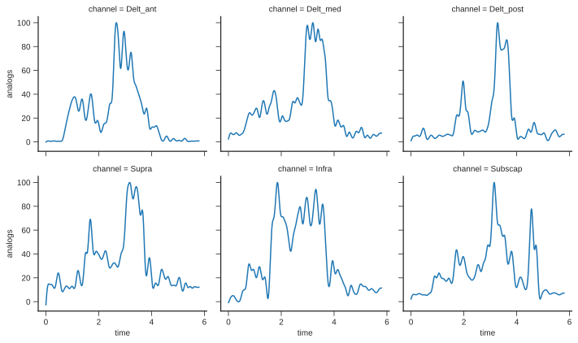

Getting Started
Installation
Before you can use motion, you will need to get it installed. Motion itself is a pure Python package, but its dependencies are not. The easiest way to get everything installed is to use conda.
To install motion with its recommended dependencies using the conda command line tool:
conda install -c conda-forge motion
import motion
Note
Want to test motion from your browser and without installing anything?
Try out our binder server: 
Quick overview
Here is a short introduction to xarray and motion, geared mainly for new users. You should be able to follow along and complete this short example in 10 about minutes.
We will carry out common tasks in biomechanics, including reading files, manipulating and processing data, making figures and writing files.
Object creation
Let's begin by creating a biomechanical data structure with motion.
In this tutorial, we will analyze the skin marker data available in this c3d file.
Motion provides the from_c3d function to read c3d files.
As we want to analyse markers data, we will use the Markers class:
from motion import Markers
data_path = "../tests/data/markers_analogs.c3d"
markers = Markers.from_c3d(data_path, prefix_delimiter=":")
Make sure to always have a check on the data after reading it.
When used in Jupyter notebooks, data can be explored interactively. A standard text representation is available otherwise.
markers
xarray.DataArray'markers'- axis: 4
- channel: 51
- time_frame: 580
- 44.16 44.17 44.16 44.17 44.17 44.19 44.2 ... 1.0 1.0 1.0 1.0 1.0 1.0
array([[[ 44.16278839, 44.16666412, 44.16487122, ...,
99.22426605, 99.24201965, 99.25963593],
[ 32.57229614, 32.57104111, 32.56489563, ...,
87.51286316, 87.52822876, 87.54118347],
[ -93.72181702, -93.72447968, -93.72324371, ...,
-41.1590271 , -41.14812851, -41.12734985],
...,
[ 562.26068115, 562.41027832, 562.56695557, ...,
625.63555908, 625.98504639, 626.25811768],
[ 568.24200439, 568.37792969, 568.49249268, ...,
624.18139648, 624.51190186, 624.78894043],
[ 568.44470215, 568.52038574, 568.59216309, ...,
623.09222412, 623.44036865, 623.75152588]],
[[-276.86193848, -276.86169434, -276.86407471, ...,
-259.15292358, -259.16690063, -259.17092896],
[-243.14048767, -243.14073181, -243.13331604, ...,
-225.44718933, -225.45556641, -225.46226501],
[ 124.78598022, 124.78731537, 124.78870392, ...,
141.820755 , 141.80741882, 141.80308533],
...,
[ 638.35144043, 638.4241333 , 638.50653076, ...,
592.00372314, 592.15686035, 592.27819824],
[ 626.79144287, 626.86114502, 626.90710449, ...,
584.15661621, 584.27709961, 584.38830566],
[ 651.37927246, 651.45532227, 651.49957275, ...,
610.59655762, 610.72821045, 610.84472656]],
[[ 675.69683838, 675.69873047, 675.6986084 , ...,
903.97650146, 903.96801758, 903.980896 ],
[ 676.57452393, 676.58099365, 676.57720947, ...,
904.61694336, 904.61645508, 904.63104248],
[ 674.27874756, 674.27947998, 674.28033447, ...,
902.77349854, 902.77819824, 902.78143311],
...,
[ 81.34425354, 81.32899475, 81.2776413 , ...,
53.45215607, 53.57727814, 53.72877121],
[ 110.84020996, 110.81329346, 110.76582336, ...,
83.92819214, 84.07093048, 84.20204163],
[ 129.69673157, 129.6789856 , 129.62939453, ...,
99.39131165, 99.52735138, 99.68258667]],
[[ 1. , 1. , 1. , ...,
1. , 1. , 1. ],
[ 1. , 1. , 1. , ...,
1. , 1. , 1. ],
[ 1. , 1. , 1. , ...,
1. , 1. , 1. ],
...,
[ 1. , 1. , 1. , ...,
1. , 1. , 1. ],
[ 1. , 1. , 1. , ...,
1. , 1. , 1. ],
[ 1. , 1. , 1. , ...,
1. , 1. , 1. ]]]) - axis(axis)<U4'x' 'y' 'z' 'ones'
array(['x', 'y', 'z', 'ones'], dtype='<U4')
- channel(channel)<U14'gauche_ext' ... 'LATH'
array(['gauche_ext', 'gauche_int', 'droite_int', 'droite_ext', 'avant_gauche',
'avant_droit', 'arriere_droit', 'arriere_gauche', 'ASISr', 'ASISl',
'PSISr', 'PSISl', 'STERr', 'STERl', 'STER', 'XIPH', 'T1', 'T10',
'CLAV_SC', 'CLAVm', 'CLAV_ant', 'CLAV_post', 'CLAVl', 'CLAV_AC',
'ACRO_tip', 'SCAP_AA', 'SCAPl', 'SCAPm', 'SCAP_CP', 'SCAP_RS',
'SCAP_SA', 'SCAP_IA', 'DELT', 'ARMl', 'ARMm', 'ARMp_up', 'ARMp_do',
'EPICl', 'EPICm', 'LARMm', 'LARMl', 'LARM_elb', 'LARM_ant', 'STYLr',
'STYLr_up', 'STYLu', 'WRIST', 'INDEX', 'LASTC', 'MEDH', 'LATH'],
dtype='<U14') - time_frame(time_frame)float640.0 0.01 0.02 ... 5.77 5.78 5.79
array([0. , 0.01, 0.02, ..., 5.77, 5.78, 5.79])
- first_frame :
- 0
- last_frame :
- 579
- rate :
- 100.0
- units :
- mm
In this case, we have generated a 3D array with the axis, channel and time_frame dimensions.
Note
There are several ways to create objects in motion: by supplying data, from files of from other data structure. A more complete guide on object creation is available in the objection creation section of the documentation.
Indexing
Since we have labels associated with each dimension, we have several kind of indexing available with varying levels of convenience and intuitiveness. Let's see three ways to get the same data (ninth marker and first time frame).
Positional indexing
Indexing directly works just like it does for numpy arrays.
markers[:, 9, 0]
<xarray.DataArray 'markers' (axis: 4)>
array([753.43908691, 75.9487381 , 187.7590332 , 1. ])
Coordinates:
* axis (axis) <U4 'x' 'y' 'z' 'ones'
channel <U14 'ASISl'
time_frame float64 0.0
Attributes:
first_frame: 0
last_frame: 579
rate: 100.0
units: mmLabel-based indexing
Label-based indexing frees us from having to know how the data are organized. We do not have to rely on dimension order and can use them explicitly to index the data.
The isel method is used when the dimension lookup is by name and the index lookup is by integer
markers.isel(channel=9, time_frame=0)
<xarray.DataArray 'markers' (axis: 4)>
array([753.43908691, 75.9487381 , 187.7590332 , 1. ])
Coordinates:
* axis (axis) <U4 'x' 'y' 'z' 'ones'
channel <U14 'ASISl'
time_frame float64 0.0
Attributes:
first_frame: 0
last_frame: 579
rate: 100.0
units: mmThe isel method is used when the dimension and index lookups are both by name.
markers.sel(channel="ASISl", time_frame=0)
<xarray.DataArray 'markers' (axis: 4)>
array([753.43908691, 75.9487381 , 187.7590332 , 1. ])
Coordinates:
* axis (axis) <U4 'x' 'y' 'z' 'ones'
channel <U14 'ASISl'
time_frame float64 0.0
Attributes:
first_frame: 0
last_frame: 579
rate: 100.0
units: mmNote
xarray offers extremely flexible indexing routines. For more details on indexing see the xarray documentation.
Metadata
Biomechanical datasets are usually more than just raw numbers and have various metadata attributes.
Some metadata are already filled by motion and available in the attrs Python dictionnary.
markers.attrs
>> {'first_frame': 0, 'last_frame': 579, 'rate': 100.0, 'units': 'mm'}They can be accessed using the standard dictionnary indexing
markers.attrs["rate"]
>> 100.0Or directly as a propriety
markers.rate
>> 100.0You can assign anything you wish.
markers.attrs["description"] = "Skin marker positions recorded in Montreal."
markers.attrs["participant_id"] = 12
markers.time_frame.attrs["units"] = "seconds"
markers
<xarray.DataArray 'markers' (axis: 4, channel: 51, time_frame: 580)>
array([[[ 44.16278839, 44.16666412, 44.16487122, ...,
99.22426605, 99.24201965, 99.25963593],
[ 32.57229614, 32.57104111, 32.56489563, ...,
87.51286316, 87.52822876, 87.54118347],
[ -93.72181702, -93.72447968, -93.72324371, ...,
-41.1590271 , -41.14812851, -41.12734985],
...,
[ 562.26068115, 562.41027832, 562.56695557, ...,
625.63555908, 625.98504639, 626.25811768],
[ 568.24200439, 568.37792969, 568.49249268, ...,
624.18139648, 624.51190186, 624.78894043],
[ 568.44470215, 568.52038574, 568.59216309, ...,
623.09222412, 623.44036865, 623.75152588]],
[[-276.86193848, -276.86169434, -276.86407471, ...,
-259.15292358, -259.16690063, -259.17092896],
[-243.14048767, -243.14073181, -243.13331604, ...,
-225.44718933, -225.45556641, -225.46226501],
[ 124.78598022, 124.78731537, 124.78870392, ...,
141.820755 , 141.80741882, 141.80308533],
...,
[ 638.35144043, 638.4241333 , 638.50653076, ...,
592.00372314, 592.15686035, 592.27819824],
[ 626.79144287, 626.86114502, 626.90710449, ...,
584.15661621, 584.27709961, 584.38830566],
[ 651.37927246, 651.45532227, 651.49957275, ...,
610.59655762, 610.72821045, 610.84472656]],
[[ 675.69683838, 675.69873047, 675.6986084 , ...,
903.97650146, 903.96801758, 903.980896 ],
[ 676.57452393, 676.58099365, 676.57720947, ...,
904.61694336, 904.61645508, 904.63104248],
[ 674.27874756, 674.27947998, 674.28033447, ...,
902.77349854, 902.77819824, 902.78143311],
...,
[ 81.34425354, 81.32899475, 81.2776413 , ...,
53.45215607, 53.57727814, 53.72877121],
[ 110.84020996, 110.81329346, 110.76582336, ...,
83.92819214, 84.07093048, 84.20204163],
[ 129.69673157, 129.6789856 , 129.62939453, ...,
99.39131165, 99.52735138, 99.68258667]],
[[ 1. , 1. , 1. , ...,
1. , 1. , 1. ],
[ 1. , 1. , 1. , ...,
1. , 1. , 1. ],
[ 1. , 1. , 1. , ...,
1. , 1. , 1. ],
...,
[ 1. , 1. , 1. , ...,
1. , 1. , 1. ],
[ 1. , 1. , 1. , ...,
1. , 1. , 1. ],
[ 1. , 1. , 1. , ...,
1. , 1. , 1. ]]])
Coordinates:
* axis (axis) <U4 'x' 'y' 'z' 'ones'
* channel (channel) <U14 'gauche_ext' 'gauche_int' ... 'MEDH' 'LATH'
* time_frame (time_frame) float64 0.0 0.01 0.02 0.03 ... 5.76 5.77 5.78 5.79
Attributes:
first_frame: 0
last_frame: 579
rate: 100.0
units: mm
description: Skin marker positions recorded in Montreal.
participant_id: 12Computation
Arithmetic
As the underlying data-structure is a numpy array, xarray data arrays work the same way you would expect if you are used to numpy.
subset = markers[:, 0, :6]
subset + 10
<xarray.DataArray 'markers' (axis: 4, time_frame: 6)>
array([[ 54.16278839, 54.16666412, 54.16487122, 54.16558075,
54.17311096, 54.18517685],
[-266.86193848, -266.86169434, -266.86407471, -266.86123657,
-266.85812378, -266.85818481],
[ 685.69683838, 685.69873047, 685.6986084 , 685.69775391,
685.7041626 , 685.69592285],
[ 11. , 11. , 11. , 11. ,
11. , 11. ]])
Coordinates:
* axis (axis) <U4 'x' 'y' 'z' 'ones'
channel <U14 'gauche_ext'
* time_frame (time_frame) float64 0.0 0.01 0.02 0.03 0.04 0.05subset.T # transpose
<xarray.DataArray 'markers' (time_frame: 6, axis: 4)>
array([[ 44.16278839, -276.86193848, 675.69683838, 1. ],
[ 44.16666412, -276.86169434, 675.69873047, 1. ],
[ 44.16487122, -276.86407471, 675.6986084 , 1. ],
[ 44.16558075, -276.86123657, 675.69775391, 1. ],
[ 44.17311096, -276.85812378, 675.7041626 , 1. ],
[ 44.18517685, -276.85818481, 675.69592285, 1. ]])
Coordinates:
* axis (axis) <U4 'x' 'y' 'z' 'ones'
channel <U14 'gauche_ext'
* time_frame (time_frame) float64 0.0 0.01 0.02 0.03 0.04 0.05
Attributes:
first_frame: 0
last_frame: 579
rate: 100.0
units: mm
description: Skin marker positions recorded in Montreal.
participant_id: 12subset.mean()
<xarray.DataArray 'markers' ()>
array(111.00187318)
Coordinates:
channel <U14 'gauche_ext'subset.mean(axis=1)
<xarray.DataArray 'markers' (axis: 4)>
array([ 44.16969872, -276.86087545, 675.69866943, 1. ])
Coordinates:
* axis (axis) <U4 'x' 'y' 'z' 'ones'
channel <U14 'gauche_ext'We can, however, take advantage of the labels instead of axis numbers
subset.mean(dim="time_frame")
<xarray.DataArray 'markers' (axis: 4)>
array([ 44.16969872, -276.86087545, 675.69866943, 1. ])
Coordinates:
* axis (axis) <U4 'x' 'y' 'z' 'ones'
channel <U14 'gauche_ext'Arithmetic operations broadcast based on dimension name. This means you don’t need to insert dummy dimensions for alignment:
only_first_axis = subset.sel(axis="x")
only_first_frame = subset.isel(time_frame=0)
only_first_axis
<xarray.DataArray 'markers' (time_frame: 6)>
array([44.16278839, 44.16666412, 44.16487122, 44.16558075, 44.17311096,
44.18517685])
Coordinates:
axis <U4 'x'
channel <U14 'gauche_ext'
* time_frame (time_frame) float64 0.0 0.01 0.02 0.03 0.04 0.05
Attributes:
first_frame: 0
last_frame: 579
rate: 100.0
units: mm
description: Skin marker positions recorded in Montreal.
participant_id: 12only_first_frame
<xarray.DataArray 'markers' (axis: 4)>
array([ 44.16278839, -276.86193848, 675.69683838, 1. ])
Coordinates:
* axis (axis) <U4 'x' 'y' 'z' 'ones'
channel <U14 'gauche_ext'
time_frame float64 0.0
Attributes:
first_frame: 0
last_frame: 579
rate: 100.0
units: mm
description: Skin marker positions recorded in Montreal.
participant_id: 12only_first_frame + only_first_axis
<xarray.DataArray 'markers' (axis: 4, time_frame: 6)>
array([[ 88.32557678, 88.32945251, 88.32765961, 88.32836914,
88.33589935, 88.34796524],
[-232.69915009, -232.69527435, -232.69706726, -232.69635773,
-232.68882751, -232.67676163],
[ 719.85962677, 719.8635025 , 719.86170959, 719.86241913,
719.86994934, 719.88201523],
[ 45.16278839, 45.16666412, 45.16487122, 45.16558075,
45.17311096, 45.18517685]])
Coordinates:
* axis (axis) <U4 'x' 'y' 'z' 'ones'
channel <U14 'gauche_ext'
* time_frame (time_frame) float64 0.0 0.01 0.02 0.03 0.04 0.05Let's compare with the sum made with numpy arrays:
only_first_axis.values + only_first_axis.values
>> array([88.32557678, 88.33332825, 88.32974243, 88.3311615 , 88.34622192,
88.3703537 ])And we do not need to worry about the order of dimensions
subset - subset.T
<xarray.DataArray 'markers' (axis: 4, time_frame: 6)>
array([[0., 0., 0., 0., 0., 0.],
[0., 0., 0., 0., 0., 0.],
[0., 0., 0., 0., 0., 0.],
[0., 0., 0., 0., 0., 0.]])
Coordinates:
* axis (axis) <U4 'x' 'y' 'z' 'ones'
channel <U14 'gauche_ext'
* time_frame (time_frame) float64 0.0 0.01 0.02 0.03 0.04 0.05Whereas this is not possible with numpy arrays:
subset.values - subset.values.T
ValueError: operands could not be broadcast together with shapes (4,6) (6,4)
Note
xarray supports powerful shortcust for computation. For more, see the xarray documentation.
Exploring missing values
When we visualize some of our markers, we can realize that there are some missing values
markers.sel(axis="x", channel="SCAP_CP").plot.line(x="time_frame");
Let's investigate those missing values
markers_null_values = markers.sel(axis="x").isnull()
print(f"There are {markers_null_values.sum().values} missing values")
>> There are 305 missing values
What are the 5 markers with the most missing values?
markers_null_values.sum(dim="time_frame").to_series().nlargest(5).plot.barh();
The cumulative number of missing values can tell us when marker occlusions occur
markers_null_values.sum("channel").cumsum("time_frame").plot();
Now that we know more about the missing values, we can use xarray for filling missing values via 1D interpolation
markers_without_null = markers.interpolate_na(dim="time_frame", method="cubic")
import matplotlib.pyplot as plt
markers.sel(axis="x", channel="SCAP_CP").plot.line(x="time_frame")
markers_without_null.where(markers.isnull()).sel(axis="x", channel="SCAP_CP").plot.line(
x="time_frame", label="interpolated", color="r"
)
plt.legend();

Electromyographic pipeline
Motion implements specialized functionalities commonly used in biomechanics.
Let's proccess the electromyographic data contained in our c3d file.
from motion import Analogs
muscles = [
"Delt_med",
"Delt_post",
"Biceps",
"Triceps",
"Trap_sup",
"Trap_inf",
"Gd_dent",
"Supra",
]
emg = Analogs.from_c3d(data_path, suffix_delimiter=".", usecols=muscles)
emg.time_frame.attrs["units"] = "seconds"
emg.plot(x="time_frame", col="channel", col_wrap=4);

emg_processed = (
emg.meca.band_pass(freq=emg.rate, order=2, cutoff=[10, 425])
.meca.center()
.meca.abs()
.meca.low_pass(freq=emg.rate, order=4, cutoff=5)
.meca.normalize()
)
emg_processed.plot(x="time_frame", col="channel", col_wrap=4);

emg_processed.meca.to_wide_dataframe().plot.box(figsize=(8, 4));
fig, axes = plt.subplots(ncols=2, figsize=(10, 4))
emg_processed.mean("channel").plot(ax=axes[0])
axes[0].set_title("Mean EMG activation")
emg_processed.plot.hist(ax=axes[1], bins=50)
axes[1].set_title("EMG activation distribution");

emg_processed.meca.to_wide_dataframe().corr().round(2).style.background_gradient().format("{:.2}")
channel Biceps Delt_med Delt_post Gd_dent Supra Trap_inf Trap_sup Triceps channel
Biceps
1.0
0.01
0.04
0.18
0.12
0.2
0.16
-0.1
Delt_med
0.01
1.0
0.77
0.87
0.9
0.76
0.85
0.91
Delt_post
0.04
0.77
1.0
0.81
0.84
0.68
0.68
0.76
Gd_dent
0.18
0.87
0.81
1.0
0.85
0.84
0.82
0.8
Supra
0.12
0.9
0.84
0.85
1.0
0.76
0.91
0.83
Trap_inf
0.2
0.76
0.68
0.84
0.76
1.0
0.73
0.65
Trap_sup
0.16
0.85
0.68
0.82
0.91
0.73
1.0
0.71
Triceps
-0.1
0.91
0.76
0.8
0.83
0.65
0.71
1.0
Note
For more details, see the data processing section of the documentation.
Datasets
Datasets are a usefull xarray feature to store multiple data arrays with common dimensions
import xarray as xr
import numpy as np
trials = xr.Dataset(
{f"trial {i}": Analogs.from_random_data(size=(2, 100)) for i in range(10)},
coords={
"channel": ["biceps", "triceps"],
"time_frame": np.arange(start=0, stop=1, step=1 / 100),
},
)
trials
<xarray.Dataset>
Dimensions: (channel: 2, time_frame: 100)
Coordinates:
* channel (channel) <U7 'biceps' 'triceps'
* time_frame (time_frame) float64 0.0 0.01 0.02 0.03 ... 0.96 0.97 0.98 0.99
Data variables:
trial 0 (channel, time_frame) float64 0.6213 1.719 0.866 ... 9.505 8.115
trial 1 (channel, time_frame) float64 0.4762 -1.526 ... -19.32 -19.3
trial 2 (channel, time_frame) float64 0.3844 1.646 1.07 ... 7.246 6.323
trial 3 (channel, time_frame) float64 1.449 1.019 ... -0.7756 -0.4806
trial 4 (channel, time_frame) float64 -0.8075 -0.8303 ... 4.079 3.83
trial 5 (channel, time_frame) float64 0.4531 -1.098 ... 2.398 3.985
trial 6 (channel, time_frame) float64 -1.182 -1.656 ... -2.581 -2.192
trial 7 (channel, time_frame) float64 -2.592 -3.178 ... 15.51 15.27
trial 8 (channel, time_frame) float64 -0.3918 -1.442 ... 25.23 26.19
trial 9 (channel, time_frame) float64 -1.481 -2.139 ... 0.9357 1.831We can still access the individual data arrays
trials["trial 1"]
<xarray.DataArray 'trial 1' (channel: 2, time_frame: 100)>
array([[ 0.47623852, -1.52647846, -1.96738802, -1.42058653,
-2.50657205, -2.39306107, -2.38815955, -3.96941323,
-6.37847912, -6.24926056, -7.50760797, -8.00105399,
-7.64407712, -8.61989586, -7.61570536, -7.95773563,
-9.20630194, -9.91979492, -10.52154282, -12.85969668,
-13.62744403, -14.49864251, -14.43498671, -12.29269643,
-13.02242288, -12.80080327, -11.67041621, -11.24812038,
-9.66059498, -9.93072116, -9.74923083, -10.06229148,
-11.13082113, -12.49845396, -14.237828 , -15.81771657,
-16.44600458, -16.50841704, -17.42825405, -18.18971984,
-16.78854839, -19.47244051, -21.28145729, -20.47938508,
-18.33201631, -17.91306457, -17.21616681, -18.86668992,
-18.31816582, -16.02543226, -16.64301578, -17.03206438,
-17.42983904, -15.77192179, -13.98902039, -14.03357541,
-13.48182332, -13.70065456, -14.33658026, -12.67135754,
-13.53896994, -13.5048632 , -11.61352025, -11.60257998,
-12.55901814, -13.5419003 , -14.26830579, -14.60865389,
-14.2919254 , -15.89631716, -15.4440441 , -14.83500062,
-16.4688737 , -17.16844731, -18.02335305, -16.197262 ,
-17.00791146, -16.90529553, -14.86090342, -14.14735878,
-14.83183833, -13.17862687, -13.81717689, -13.38957044,
-13.74157632, -13.94395614, -13.12239669, -12.81361114,
-14.77627099, -15.49713256, -14.17186861, -15.13607837,
-15.08852131, -16.39951157, -15.69023501, -17.48194166,
-17.89564911, -18.46966648, -19.10539655, -18.86210539],
[ -0.07562232, -2.13157313, -2.52565624, -3.16737923,
-3.47872793, -3.39455281, -3.58575229, -4.52984777,
-2.32309177, -1.22442814, -0.70818375, -1.40633073,
-2.49285451, -2.37423871, -1.78166419, -1.36713184,
-2.04649093, -3.05242068, -2.49374956, -2.94197875,
-3.14761933, -2.26566867, -2.3992928 , -1.82904497,
-2.6197727 , -4.10526706, -3.02491866, -3.52888903,
-3.46395081, -3.54457552, -2.35200931, -1.83294786,
-1.38317291, -1.10246625, -0.63363609, -2.59831925,
-2.840266 , -4.43755361, -3.03045171, -2.3281822 ,
-1.85689469, -1.52041305, -0.28943751, -1.0495644 ,
-0.13113076, -2.76416536, -3.33035513, -3.26453514,
-3.87142215, -3.50035367, -4.0517286 , -5.0390548 ,
-4.94376262, -3.74177457, -5.3685079 , -6.03157489,
-7.19781985, -8.22252785, -8.96124884, -10.46496616,
-11.84970806, -10.06281609, -10.05809348, -11.10129014,
-11.39836653, -12.08978453, -11.92826824, -11.33826858,
-10.33361977, -11.26835467, -13.77656503, -12.90916429,
-13.53178288, -13.21946147, -13.03004045, -12.9658466 ,
-12.79456943, -14.6075092 , -14.92044819, -14.99394043,
-17.62197044, -17.54441968, -18.32578838, -17.70853203,
-16.47186952, -17.30728455, -18.76528554, -17.05165987,
-17.83764451, -18.87369267, -19.35153227, -19.97146621,
-19.85233526, -19.49087653, -19.83187261, -19.86927008,
-18.48532508, -19.56761191, -19.32498661, -19.30402421]])
Coordinates:
* channel (channel) <U7 'biceps' 'triceps'
* time_frame (time_frame) float64 0.0 0.01 0.02 0.03 ... 0.96 0.97 0.98 0.99While being able to do indexing and computation on the whole dataset
trials.sel(channel="biceps") + 100
<xarray.Dataset>
Dimensions: (time_frame: 100)
Coordinates:
channel <U7 'biceps'
* time_frame (time_frame) float64 0.0 0.01 0.02 0.03 ... 0.96 0.97 0.98 0.99
Data variables:
trial 0 (time_frame) float64 100.6 101.7 100.9 ... 95.29 95.84 95.57
trial 1 (time_frame) float64 100.5 98.47 98.03 ... 81.53 80.89 81.14
trial 2 (time_frame) float64 100.4 101.6 101.1 ... 92.7 92.26 90.23
trial 3 (time_frame) float64 101.4 101.0 101.5 ... 102.2 101.0 100.7
trial 4 (time_frame) float64 99.19 99.17 101.0 ... 108.6 106.8 108.0
trial 5 (time_frame) float64 100.5 98.9 99.64 ... 94.22 95.92 94.42
trial 6 (time_frame) float64 98.82 98.34 97.76 ... 116.7 116.1 115.2
trial 7 (time_frame) float64 97.41 96.82 96.98 97.8 ... 97.0 97.46 98.0
trial 8 (time_frame) float64 99.61 98.56 98.87 ... 97.05 95.71 96.23
trial 9 (time_frame) float64 98.52 97.86 98.33 ... 97.85 98.54 98.53File IO
NetCDF is the recommended file format to save and share xarray object.
emg.to_netcdf("emg.nc")
xr.open_dataarray("emg.nc")
<xarray.DataArray 'analogs' (channel: 8, time_frame: 11600)>
array([[-4.021073e-05, -6.808358e-05, -8.640526e-05, ..., 4.983108e-05,
4.229912e-05, 3.812956e-05],
[-1.361103e-05, -1.327931e-05, -1.273931e-05, ..., -2.546135e-05,
-2.306871e-05, -1.898580e-05],
[ 9.727633e-06, 9.567407e-06, 9.567407e-06, ..., 9.903105e-06,
1.118365e-05, 1.182195e-05],
...,
[-9.918351e-06, -1.089098e-05, -1.067791e-05, ..., -1.001964e-06,
-1.264539e-05, -1.919743e-05],
[-2.296531e-06, -9.303800e-07, -1.047933e-06, ..., 1.562380e-06,
2.389907e-06, 3.062012e-06],
[ 2.975303e-04, 1.551703e-04, 3.527764e-05, ..., -2.581336e-04,
-4.462923e-04, -5.757854e-04]])
Coordinates:
* time_frame (time_frame) timedelta64[ns] 00:00:00 ... 00:00:05.799500
* channel (channel) object 'Delt_med' 'Delt_post' ... 'Gd_dent' 'Supra'
Attributes:
first_frame: 0
last_frame: 11580
rate: 2000.0
units: Vtrials.to_netcdf("trials.nc")
import xarray as xr
xr.open_dataset("trials.nc")
<xarray.Dataset>
Dimensions: (channel: 2, time_frame: 100)
Coordinates:
* time_frame (time_frame) float64 0.0 0.01 0.02 0.03 ... 0.96 0.97 0.98 0.99
* channel (channel) object 'biceps' 'triceps'
Data variables:
trial 0 (channel, time_frame) float64 ...
trial 1 (channel, time_frame) float64 ...
trial 2 (channel, time_frame) float64 ...
trial 3 (channel, time_frame) float64 ...
trial 4 (channel, time_frame) float64 ...
trial 5 (channel, time_frame) float64 ...
trial 6 (channel, time_frame) float64 ...
trial 7 (channel, time_frame) float64 ...
trial 8 (channel, time_frame) float64 ...
trial 9 (channel, time_frame) float64 ...Motion implements function to read various file format commonly used in biomechanics such as c3d, csv, xlsx, sto, trc and mot.
Users can also write Matlab and csv files.
emg.meca.to_matlab("emg.mat")
emg.meca.to_csv("emg.csv")